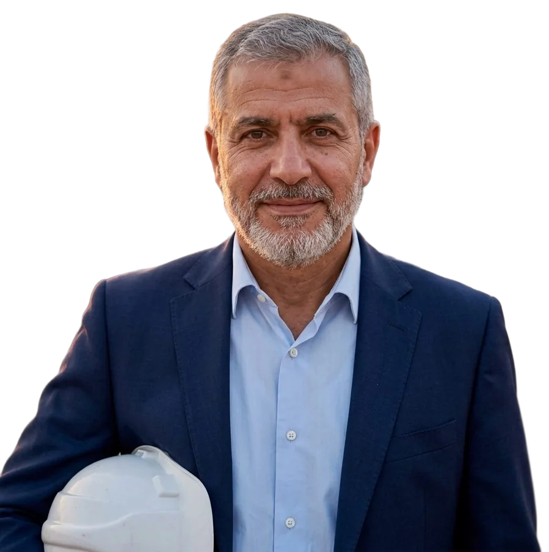

Project Director · Civil & structural · Amman → Dubai
Load path
Every load needs a clear path to the ground, and so does every decision on a project. I'm Youssef Haddadin: for twenty-five years I have delivered bridges, towers and transit structures across Jordan and the Gulf.
Follow the load
Move the load. Watch it find the ground.
This is a real calculation, running in your browser: a steel truss bridge, solved member by member every time the load moves.
Yellow members are pulled (tension), black members are pushed (compression), and their thickness shows how hard. Dashed members carry nothing for that position of the load.
What it has to do with projects
The load always reaches the supports. Design decides which way. On my projects decisions work the same way: every one has a clear route to the person who owns it, the person who checks it and the person who signs it.
Four structures, four hard problems.
- 01
Cable-stayed road bridge · Jordan
Main span 260 mTwo pylonsProject directorThe hard part: building the deck out over a live valley road. Every lift was planned around the traffic below.
- 02
Residential tower · Dubai
62 floorsPost-tensioned slabsProject directorThe hard part: keeping a steady floor cycle through the summer, with concrete pours moved to the night.
- 03
Underground metro station · Riyadh
28 m deepTop-down constructionDeputy project directorThe hard part: digging down under a slab that had already reopened the road above.
- 04
Seawater intake tunnel · Aqaba
1.2 kmTunnel boring machineProject managerThe hard part: working under the seabed of a protected coral reef, with marine monitoring every day.
Projects, figures and roles are illustrative. No real project, client or contractor is represented.
Nobody gets hurt building this.
- 07:00
Every shift starts with a briefing
Ten minutes, every crew, every day: today's lifts, today's risks, and who to call. I still join one in person every week.
- STOP
Anyone can stop the job
Every person on site has the authority to stop work if something looks wrong, and nobody is ever questioned for using it.
- TEMP
Temporary works are real works
Scaffolds, props and formwork are designed and checked with the same care as the permanent structure. Most failures start there.
Dig down: twenty-five years of ground.
Engineers read the ground before they build on it. A borehole log records every layer, from the surface down to rock. This one is my career: the most recent at the top, the bedrock of it at the bottom.
Every layer carried the next one. Ten years on site, at the bottom of this log, are why I still check the rebar before a pour.
Roles and dates are illustrative; employers are not named.
Site office. Door's open.
Open to project director roles on major infrastructure and building projects across the Gulf and the Levant.